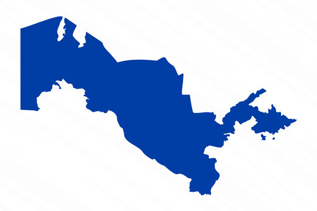

2025-yilda O'zbekiston aholisi banklardan 156,9 trln so'mlik kredit oldi
Mazkur ko‘rsatkich Markaziy bankning statistik bulletenidan ma’lum bo‘ldi.
O‘tgan yili aholi orasida kredit olish sezilarli oshgan — 49,9 foizga. Taqqoslash uchun 2024-yilda o‘sish atigi 4,4 foizni tashkil qilgandi.
Yil davomida banklar tomonidan ajratilgan kreditlarning deyarli yarmi (45,8 foiz) mikrokarslar bo‘ldi. Aholi 71,8 trln so‘mlik mikroqarz oldi va bu 2024-yilga nisbatan 56,7 foizga oshdi.
Ikkinchi o‘rindan YaTT va o‘zini o‘zi band qilganlar uchun ajratiladigan mikrokreditlar joy oldi — 28,5 trln so‘m (+63,5 foiz).
Keyingi o‘rinlarda iste’mol kreditlari (23,2 trln so‘m), avtokredit (21,6 trln so‘m) va ipoteka krediti (21,2 trln so‘m) bormoqda.

Avtokreditlar yana ko‘paygan
2025-yilda ajratilgan avtokreditlar miqdori 26,2 foizga oshib, 21,6 trln so‘mga yetdi. 2023-yilda avtokredit o‘zbekistonliklar orasida eng ommabop kredit edi. O‘sha paytlarda avtokreditlar shu qadar ommalashib ketdiki, Markaziy bank 2023-yilning ikkinchi yarimda banklarga avtokredit ajratishda cheklovlar joriy qildi. Shundan beri O‘zbekiston banklari avtokreditni faqatgina kredit portfeliga nisbatan 25 foizgacha ajratishi mumkin.